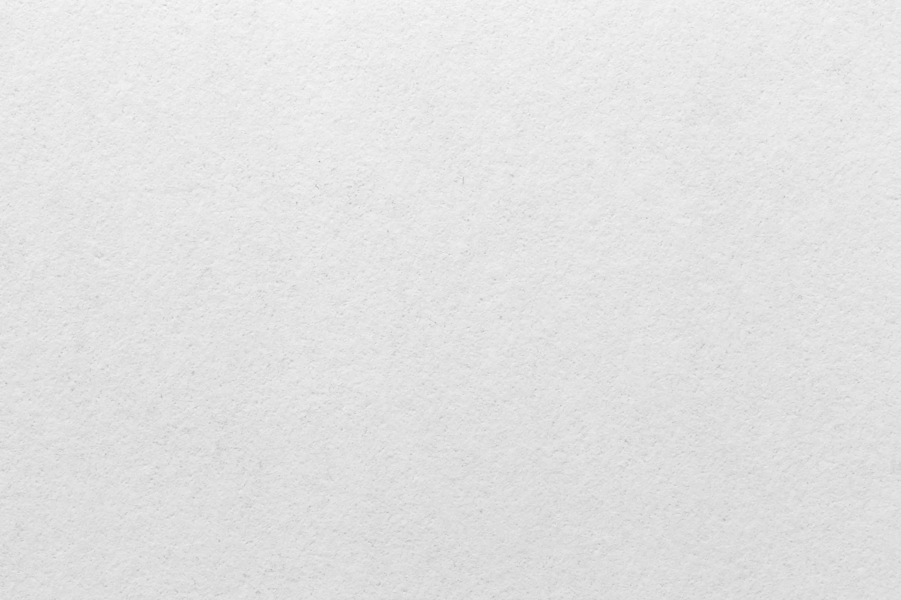
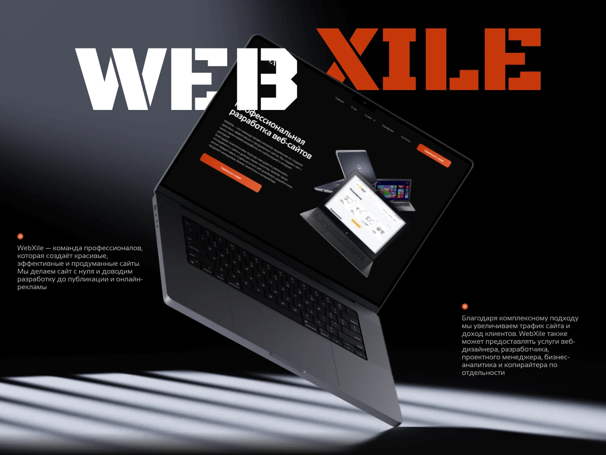
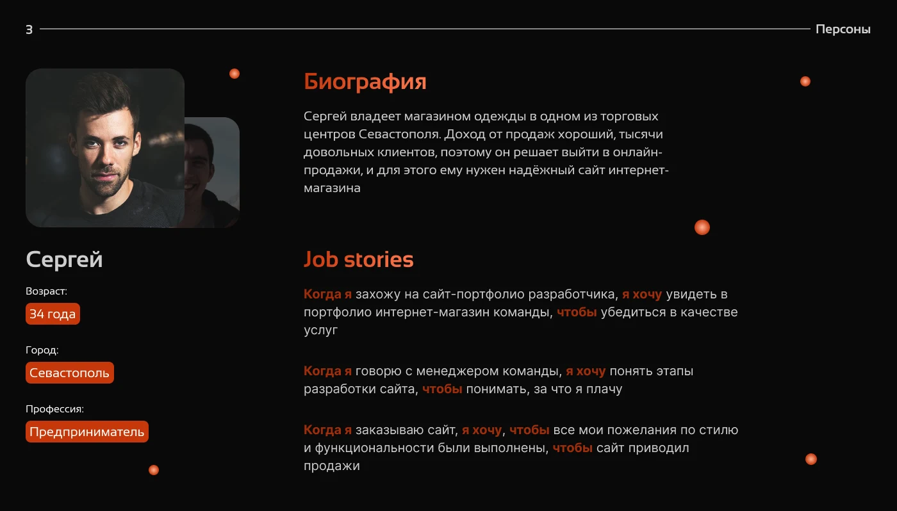
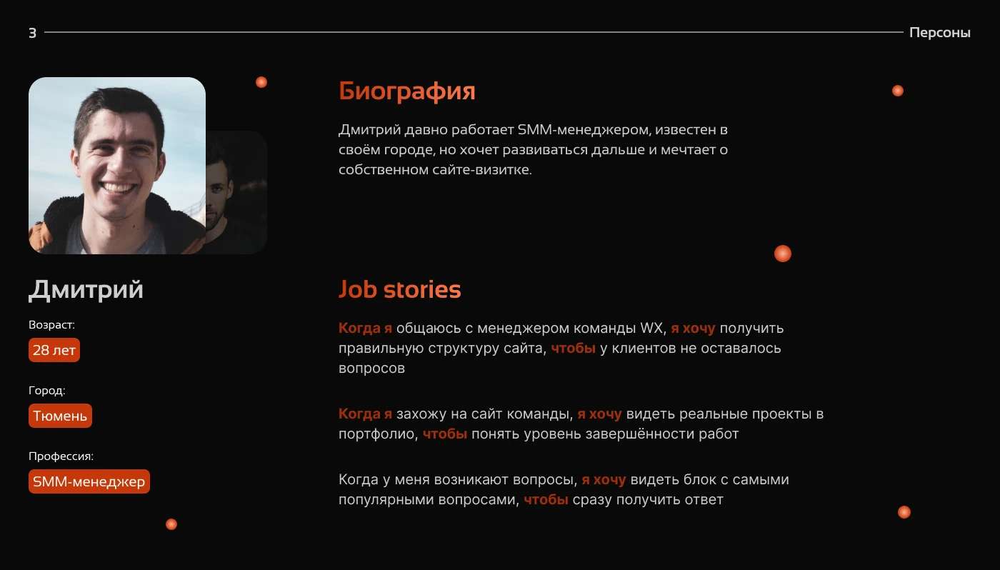
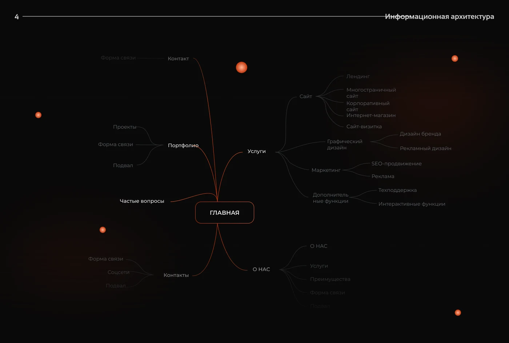
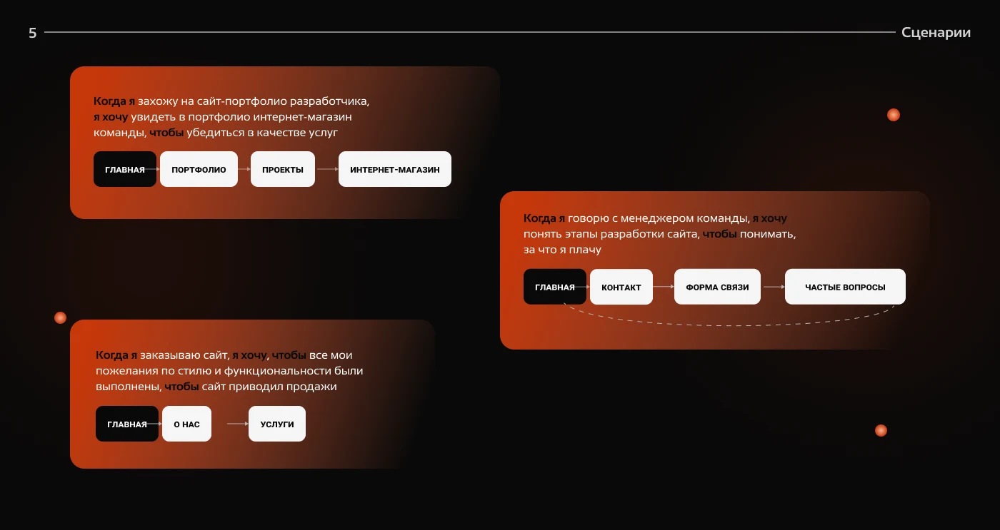
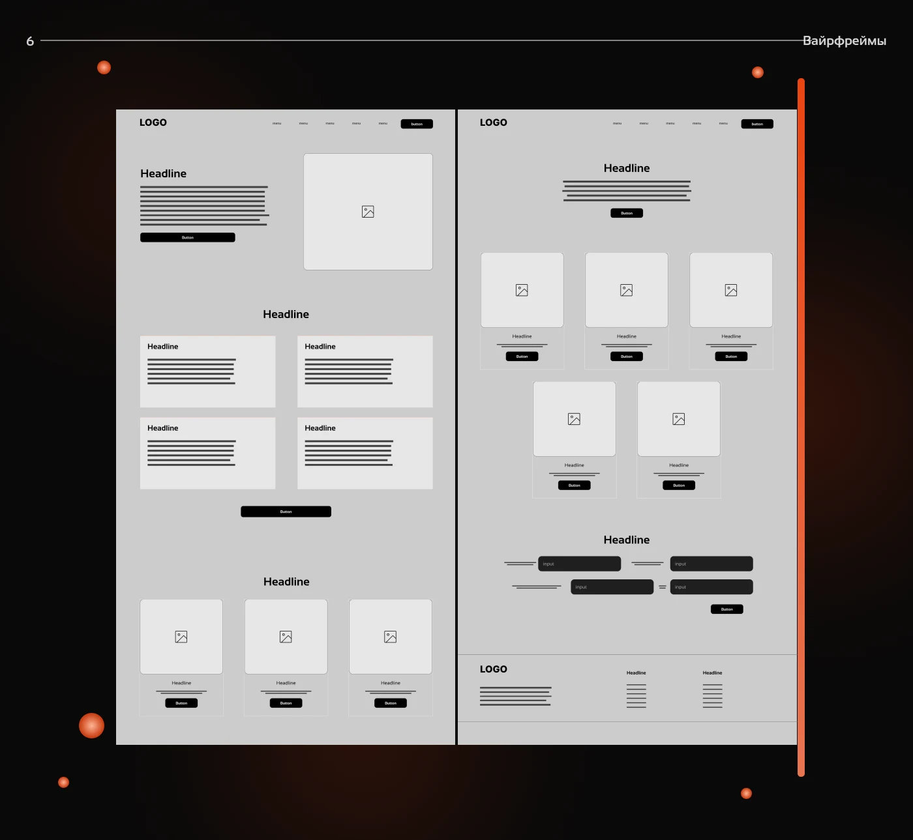
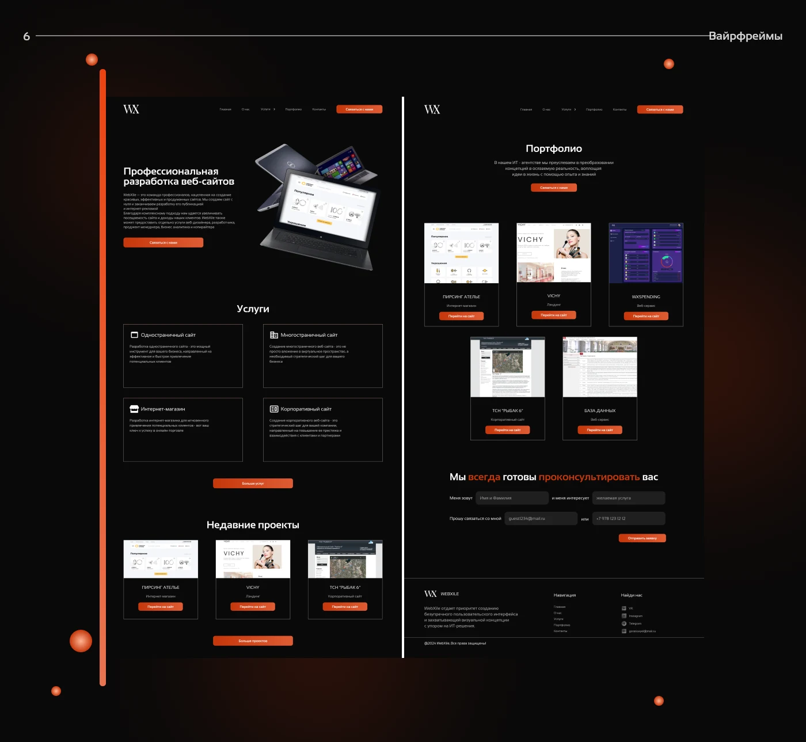
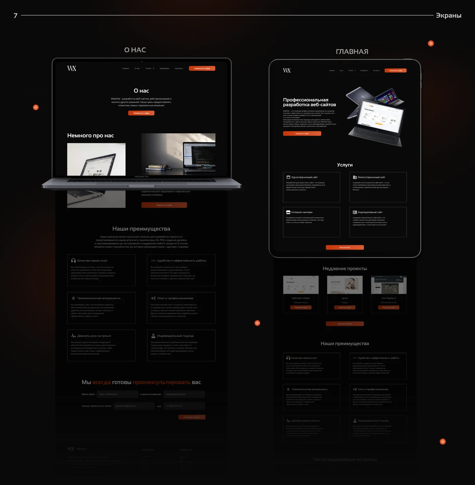
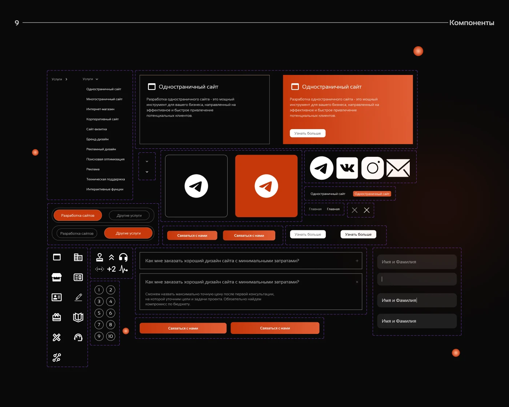

WEB · САЙТ ДИЗАЙН-СТУДИИ · UX/UI
WebXile: сайт-портфолио, который объясняет
Сайт студии, которая создаёт сайты с нуля и доводит их до публикации и онлайн-рекламы. Задача: понятная структура и приятный вид, чтобы клиент быстро находил ответы и приходил на консультацию.

МОЯ РОЛЬ
Я прошёл путь от исследования до UI: персоны и JTBD, структуру сайта, сценарии, вайрфреймы, адаптивный дизайн и UI-kit. Цель: сайт студии должен сам продавать её услуги.
КОРОТКО О КЕЙСЕ
WebXile - команда, которая создаёт красивые, эффективные и продуманные сайты с нуля. Студии нужен был сайт-портфолио, который сам продаёт её услуги: с понятной структурой, живыми проектами и коротким путём до консультации с менеджером.
Проблема и решение
Рынок создателей сайтов переполнен, поэтому сайт самой студии должен убеждать с первых секунд.


Четыре этапа от исследования до UI
Шли от понимания клиента к структуре, затем к вайрфреймам и визуальному дизайну.
Маркетинговое исследование, исследование пользователей, определение проблемы, идеи, гипотеза, JTBD и user flow.
Две персоны и три пользовательских сценария.
Style guide и Hi-Fi вайрфреймы: логика блоков сначала проверена на простых схемах.
Сайт уже читается как готовый.
Интерфейс и адаптивный дизайн для десктопа, планшета и мобильных.
Тёмная тема, оранжевый акцент, UI-kit.
Пять решений для сайта студии
От структуры до UI-kit: что я сделал на каждом этапе.
Главная - центр, всё остальное в два клика: услуги сгруппированы по задачам клиента.
Три пути до заявки: оценить качество по портфолио, понять этапы, заказать сайт.
Сначала Lo-Fi для логики блоков, затем Hi-Fi с иерархией и призывами к действию.
Тёмная тема с оранжевым акцентом, сетки перестраиваются на планшете и мобильных.
Один шрифт Sansation в двух начертаниях, цвет #C6370B и набор компонентов.






Что получилось
Сайт-портфолио студии: показывает проекты, объясняет услуги и ведёт клиента к консультации с менеджером.
Что я вынес из проекта
Сайт-портфолио на чистой вёрстке: понятная структура, тёмная тема с оранжевым акцентом и короткий путь до формы связи.
От исследования к структуре, затем к вайрфреймам и UI. На всё ушло две недели, поэтому каждый этап шёл по узкому плану.
Исследование, персоны и JTBD, информационная архитектура, сценарии, вайрфреймы Lo-Fi и Hi-Fi, UI, адаптив и UI-kit.
Запуск, сбор аналитики и проверка, как структура влияет на долю посетителей, дошедших до заявки.
Другие проекты
Можете ознакомиться с моими другими проетами